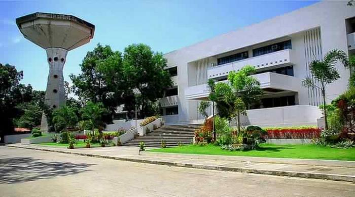

The heart of the university, the University Library and Learning Resource Center is one of the major service centers of the Polytechnic University of the Philippines. As such, it strives to meet the academic and related needs of its clientele through the provision of adequate and efficient library and information services.
The Ninoy Aquino Library and Learning Resources Center (NALLRC) is the library system of the Polytechnic University of the Philippines composed of libraries providing services to the PUP System. Its headquarters is in the building of the same name, located in Manila, Philippines. NALLRC offers various services and development of programs to its clientele.